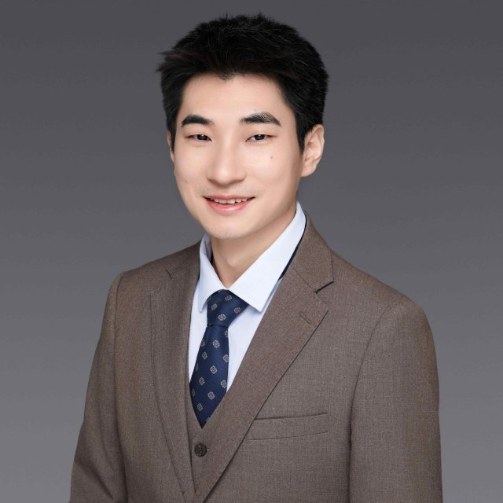

PRINCIPAL INVESTIGATORASSISTANT PROFESSOR
Rainers Yuquan Meng 孟雨泉
Department of Systems Engineering · CityUHK
Prof. Meng joined CityUHK in 2024. His research brings together machine learning, manufacturing process monitoring and control, with a focus on learning efficiently from data and physical knowledge.
2023
Ph.D., Mechanical EngineeringUniversity of Illinois Urbana-Champaign
2017
B.Eng., Mechanical EngineeringUniversity of Science and Technology of China